Assessing Cognitive Load in Immersive Environments
This project evaluated whether pupillometry-based cognitive-load
metrics, especially the Low/High Index of Pupillary Activity
(LHIPA), can robustly measure workload across desktop and immersive
VR environments. Cognitive load was manipulated with 1-back and
3-back tasks and compared across multiple eye-tracking setups.
My Role
Literature research, study conduction, data-processing pipeline, and report contribution
Pupil Labs Neon, Tobii Pro Spark, Meta Quest 3 with integrated Neon
Participants
18 recruited, 15 analyzed after excluding 3 due to data issues
Project Type
8-credit university research project
AI-generated image, used for illustrative purposes only.
Research Context
Immersive environments are increasingly used for training, education,
and interactive applications, but their sensory and interaction
demands can increase cognitive load. This makes reliable workload
measurement important when comparing VR and non-VR conditions.
Research Question
The central question was whether LHIPA can act as a robust,
device-independent workload measure across desktop and immersive VR
setups rather than only under one specific recording condition.
Experimental Design
Participants completed 1-back and 3-back tasks in three setups:
desktop with head-mounted Pupil Labs Neon, desktop with stationary
Tobii Pro Spark, and immersive VR with Meta Quest 3 and integrated
Neon.
My Contribution
My contribution focused on literature research, partial support in the research design, study conduction, and the data-processing pipeline. I helped run participant sessions and worked on transforming raw task logs, SMEQ responses, and eye-tracking recordings into an analysis-ready dataset, including calculated SMEQ, LHIPA, IPA, and PupilDiff measures for later statistical analysis.
Study Design
Participants first received a briefing, signed informed consent,
and practiced the N-back task until they were comfortable with
the procedure. The main experiment was then completed in three
environments: desktop with head-mounted Neon, desktop with Tobii
Pro Spark, and immersive VR with Meta Quest 3 and integrated
Neon.
Within each environment, participants completed both 1-back and
3-back conditions. Each task block included a 30-second baseline,
followed by the task while gaze and pupil data were recorded.
After each block, participants completed the SMEQ mental-effort
rating, and demographic data were collected after the experiment.
Environment order was counterbalanced as far as scheduling
allowed. The 1-back and 3-back order was also counterbalanced,
and task positions rotated across upper-left, center, and
bottom-right placements.
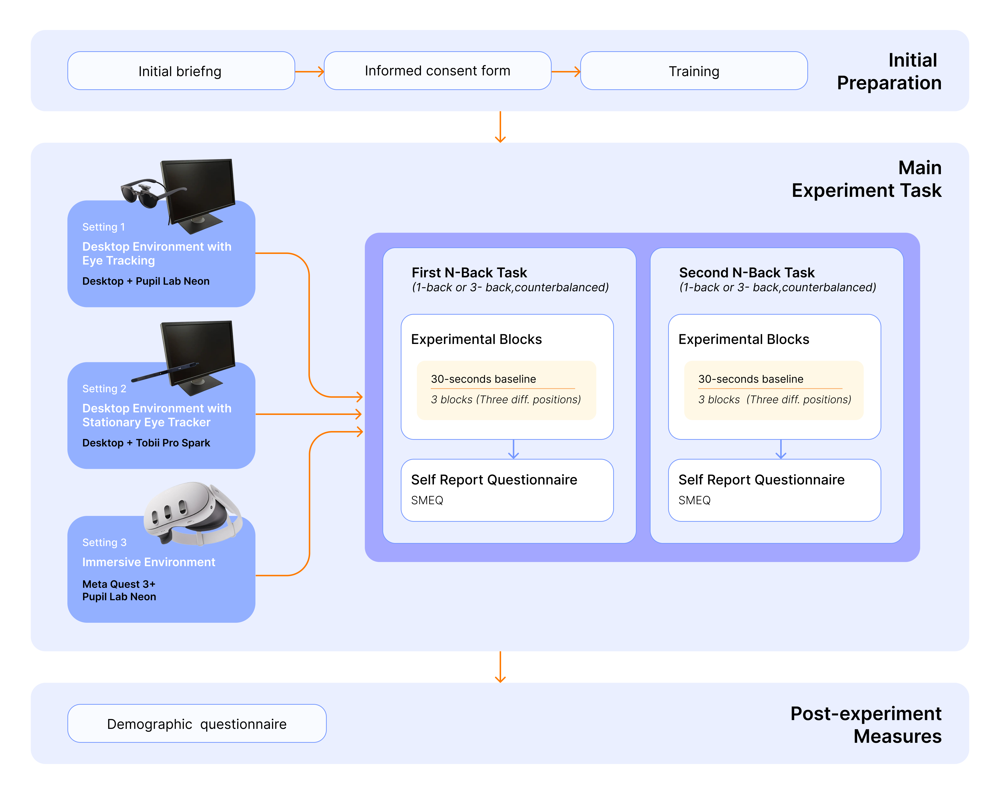
Experiment procedure showing initial preparation, the three
recording setups, N-back task blocks, SMEQ reporting, and
post-experiment measures.
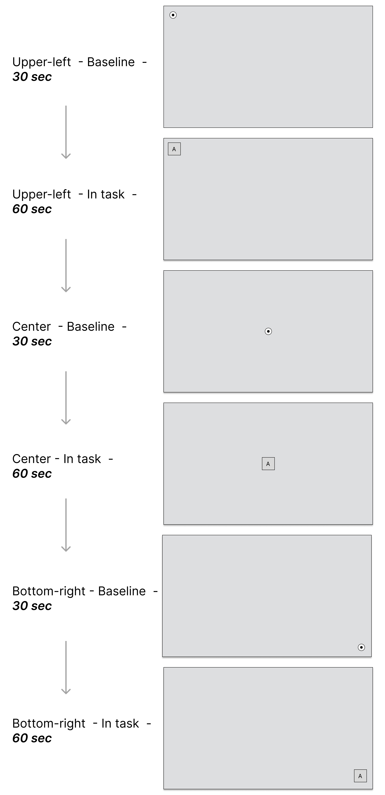
Task order with baseline and in-task phases across
upper-left, center, and bottom-right positions.
Participant Flow
18 participants were recruited, and 15 were included in the final analysis after excluding 3 due to data issues.
Three Recording Setups
Desktop + Pupil Labs Neon, Desktop + Tobii Pro Spark, and VR + Meta Quest 3 with integrated Neon.
Counterbalancing
Environment order was balanced as far as scheduling allowed, while N-back order and task positions were counterbalanced across participants.
Block Structure
Each position started with a 30-second baseline and then the N-back task, with responses collected by button press and SMEQ completed afterward.
Measures
The project combines a subjective workload measure with
pupil-based objective measures so that perceived effort and
physiological patterns can be interpreted together rather than in
isolation.
LHIPA is a wavelet-based metric derived from pupil-diameter
oscillations. In this report it is treated as the main
pupillometry measure of interest, while IPA and baseline-corrected
pupil change were used as complementary signals for comparison.
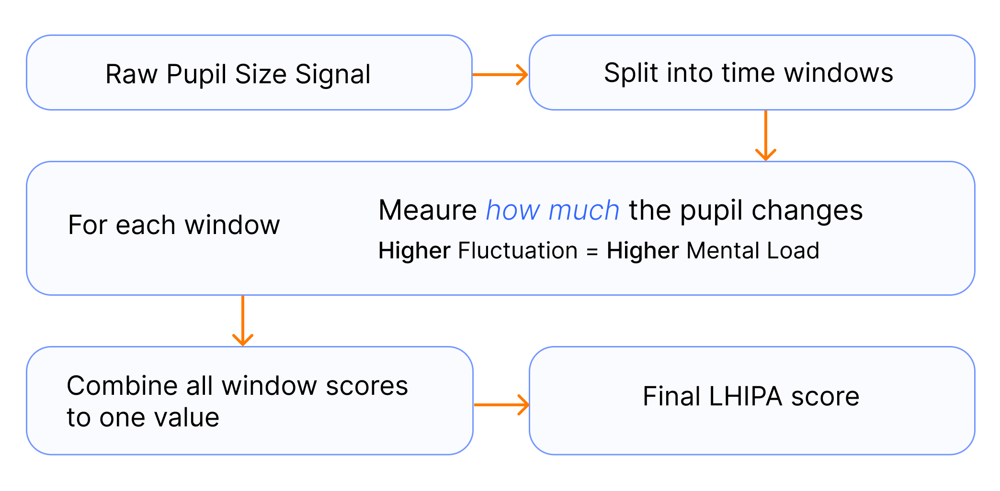
Simplified explanation figure from the report showing how LHIPA is
derived from changes in the pupil signal over time.
Subjective Measure
SMEQ was used after each task block to capture perceived mental
effort directly from participants.
Pupil-Based Primary Measure
LHIPA was the main workload metric. It is a wavelet-based measure
expected to change with cognitive load and was used to compare
desktop and immersive recordings.
Complementary Pupil Measures
IPA and baseline-corrected pupil diameter change (PupilDiff) were
analyzed alongside LHIPA to provide additional perspectives on
task-evoked workload.
Data Preprocessing
A major part of the project was turning noisy, multi-device
recordings into analysis-ready data. The report makes clear that
physiological HCI data is not simply collected and plotted: it has
to be synchronized, segmented, cleaned, and normalized before any
interpretation becomes meaningful.
This preprocessing pipeline was especially important here because
Tobii Pro Spark and Pupil Labs Neon recorded at different sampling
rates and the analysis depended on consistent segmentation across
baseline and task phases.
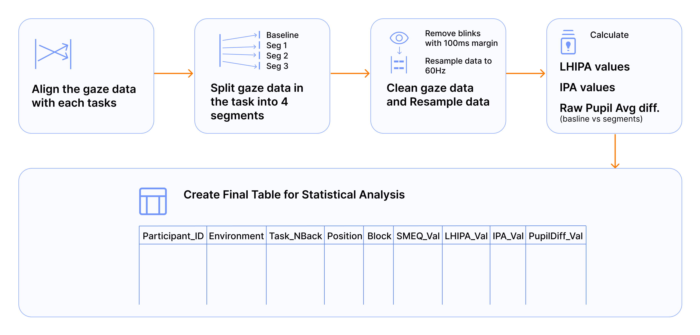
Preprocessing pipeline for aligning gaze data, cleaning
blinks, resampling to 60 Hz, and computing LHIPA, IPA, and
PupilDiff.
Correct and standardize file names.
Align raw gaze recordings with Unity and task event timestamps.
Split gaze streams into baseline and task segments.
Remove blinks and invalid pupil samples.
Remove a 100 ms margin before and after blinks.
Resample pupil data to 60 Hz to make Tobii and Neon recordings comparable.
Compute LHIPA, IPA, and baseline-corrected pupil-difference values.
Merge all measures into a long-format table for statistical analysis.
Selected Results
The figures below summarize the main subjective and
pupil-based observations. SMEQ was used to confirm the
workload manipulation, while LHIPA, IPA, and PupilDiff
were compared across environments, task difficulty, and
task position.
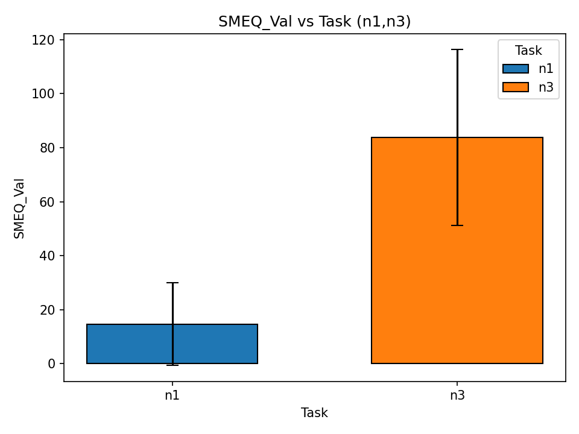
SMEQ ratings were higher for 3-back than 1-back, confirming the subjective workload manipulation.
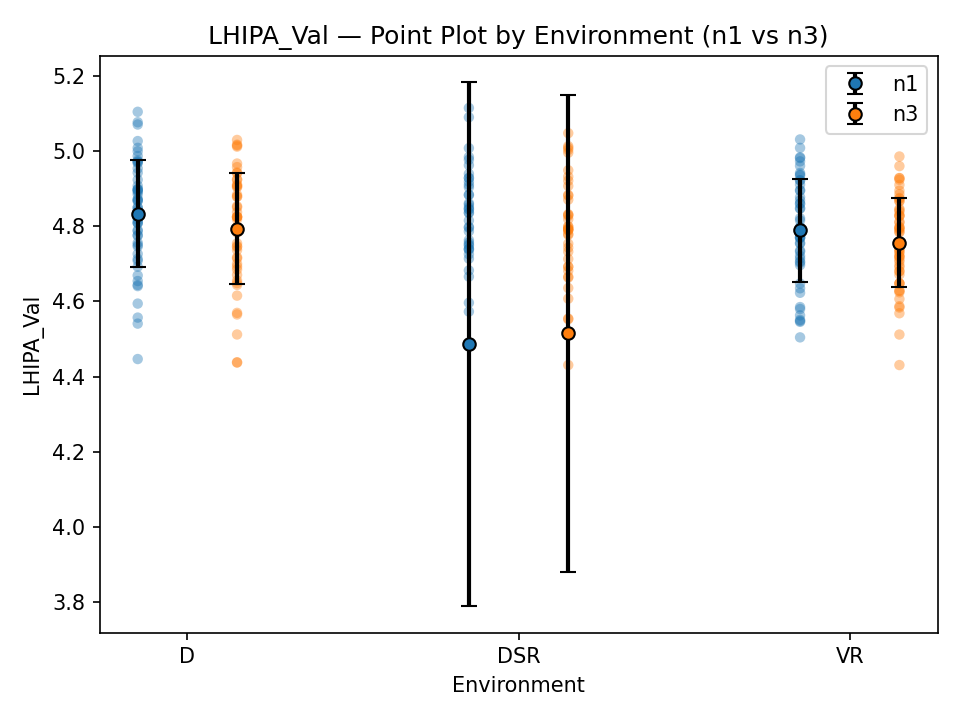
Full LHIPA comparison across environments, including the noisier stationary Tobii setup.
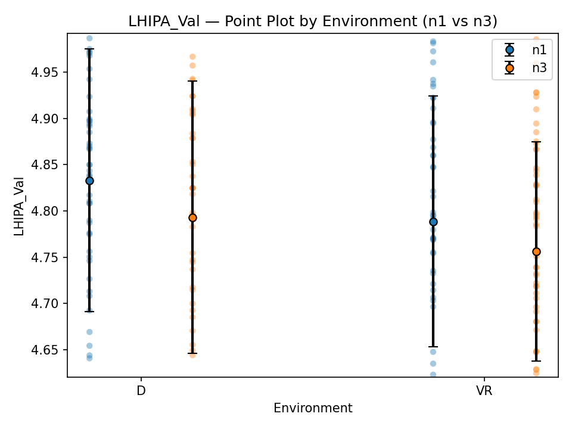
LHIPA comparison restricted to Neon-based desktop and VR recordings, where patterns were more stable.
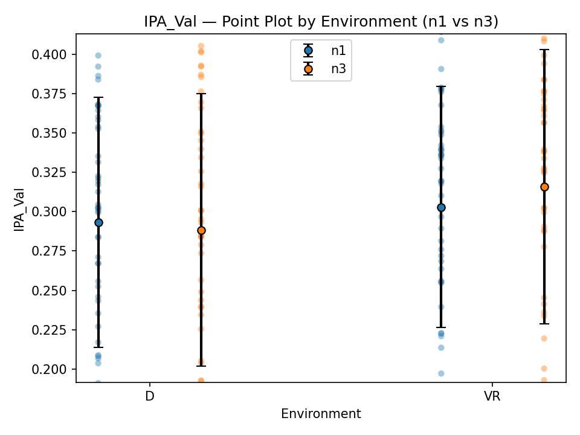
IPA comparison used as a complementary pupil-based workload measure.
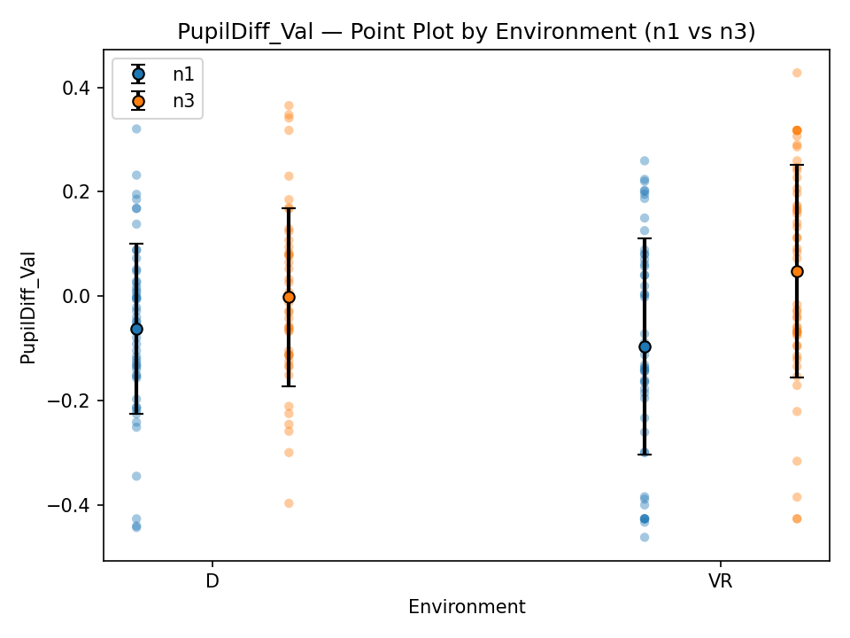
Baseline-corrected pupil change used as another view of task-evoked workload.
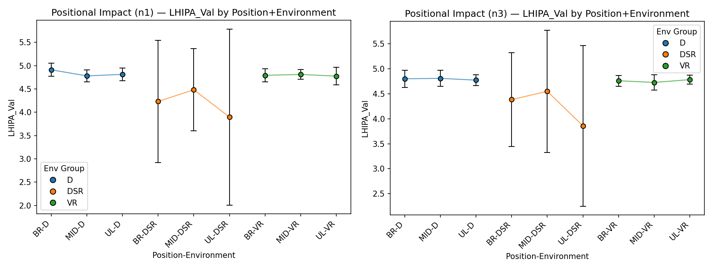
LHIPA positional impact for n1 and n3, showing how gaze/task position may influence the metric.
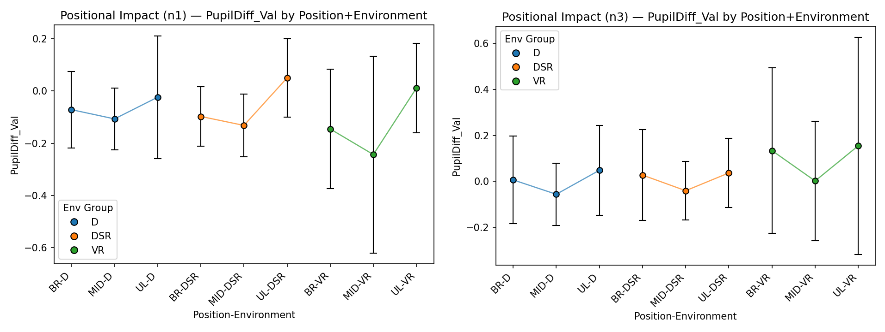
PupilDiff positional impact for n1 and n3, showing sensitivity to task position and environment.
Main Observations
The report presents these findings carefully. The patterns are
informative, but they are discussed as evidence-based observations
rather than as final proof of a universally robust workload metric.
Subjective Workload Increased as Intended
SMEQ ratings were consistently higher for 3-back than for 1-back,
suggesting that the task manipulation successfully increased
perceived workload.
LHIPA Showed Clearer Patterns in Neon-Based Setups
In the desktop Neon and VR Neon recordings, LHIPA decreased with
increasing task difficulty, which suggests that the metric may be
promising when the underlying pupil signal is cleaner.
Tobii Data Was More Fragile
The stationary Tobii setup showed substantial noise and outliers,
which made the derived LHIPA values less reliable and reduced
confidence in direct cross-device comparison.
Preprocessing Strongly Shapes Interpretability
The analysis suggests that immersive pupillometry can be useful,
but robustness depends on blink handling, missing-data treatment,
and the way sampling-rate differences are managed.
Discussion & Critical Reflection
LHIPA Can Be Informative
Across the Neon-based setups, LHIPA showed patterns that appear
consistent with increased cognitive load, which makes it a useful
candidate for immersive workload assessment.
Reliability Depends on Signal Quality
The report notes that LHIPA can break down when the pupil signal
contains many blinks or missing samples, and that sampling-rate
differences across devices matter for a fair comparison.
Complementary Metrics Matter
PupilDiff provided additional information, but it appeared more
sensitive to positional effects. This reinforces the value of
combining subjective and objective measures rather than relying on
a single signal.
Future Work
A natural next step is improving blink and missing-data handling
and evaluating robustness across devices and environments with
more stable recording conditions.
Research Value
This project demonstrates how cognitive-load research in immersive
environments requires a careful connection between experimental design,
physiological data collection, preprocessing, and cautious interpretation
of subjective and pupil-based workload measures.
Experience with experimental HCI methodology.
Comparison of VR and non-VR conditions in a controlled study setup.
Work with eye-tracking and pupillometry data.
Development of a preprocessing pipeline for noisy physiological signals.
Integration of subjective and objective workload measures.
Critical evaluation of measurement reliability across devices and environments.
Relevance to HCI, VR, cognitive load, adaptive systems, and human-centered intelligent interfaces.
Tools & Methods
HCIVirtual RealityCognitive LoadEye TrackingPupillometryLHIPAIPASMEQN-back TaskMeta Quest 3Pupil Labs NeonTobii Pro SparkPythonData PreprocessingPhysiological Data AnalysisHuman-Subject StudyResearch MethodsUnity
What this project taught me
Cognitive-load measurement in VR benefits from combining subjective and physiological measures.
Pupil-based metrics are promising, but device quality and preprocessing strongly affect reliability.
LHIPA may be useful for immersive workload assessment when blinks and missing data are handled robustly.
Research in immersive environments requires careful synchronization, experimental control, and cautious interpretation.